江西永新橙皮2021年第三季度电商销售白皮书
2021年第三季度相较于其他季度永新橙皮的消费热度略有上涨，可能是因为第三季度能够买到新鲜制作的橙皮。但是永新橙皮的消费热度一直处于较低水平，可能是由于永新橙皮虽然品质优良、颇具特色，但是面向在线消费者的推广力度不够。
一、
江西永新橙皮2021第三季度日消费热度和消费评价概况度
1.消费热度：消费者的评价热度不高，日平均评价数量不足一条，整体消费热度间断无规律。
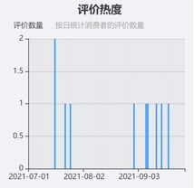
2021年第三季度江西永新橙皮的消费热度呈现出起伏中整体有所上升的态势。9月消费者总评论数量多于7月及8月，7月14单日2条达到第三季度峰值，其余时间最高评价数量仅为每日单条，消费热度不高，且表现出不具规律的波动状态，永新橙皮的制作时间一般为每年农历六月，因此第三季度可以买到新鲜制作的橙皮，相较于一年中的其他季度，第三季度的消费热度略高。
2.消费评价：有两位消费者评分为2，消费者综合评分大于4，整体来说消费者对于橙皮评价较高
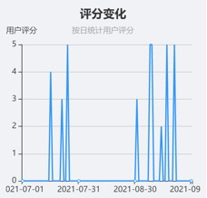
2021年第三季度，消费者对江西永新橙皮的综合评分为4.10，5分评价占比较大，虽然第三季度消费热度不高但整体消费评价处于较高水平，可见已购买永新橙皮的消费者对江西永新橙皮的认可度较高，产品购买体验良好。
3.同期对比：同比消费热度有所提升，消费评价下降。
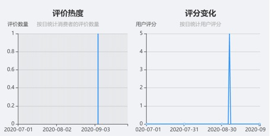
对比上年同期数据可以发现，2020年第三季度的评价数量仅为1，而2021年第三季度的评价数量为9，整体评论数量上涨明显，可见本产品市场热度相比去年同期有显著提升；从消费评价来看，相比2020年第三季度，2021年第三季度消费者总体评分下降，有更多的消费者打出了5分，也有一些消费者打出了更低的分数，因此江西永新橙皮还需要不断优化升级，获得更多的消费热度以及获得消费者更为满意的评价。
二、
江西永新橙皮2021年第三季度消费者整体满意度分析
1.用户满意度概况：六成以上用户持”非常满意“态度，消费者整体满意度较高
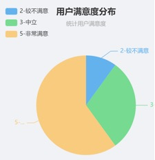
60%的消费者对江西永新橙皮的评价是非常满意，可见消费者对本产品的满意度和认可度较高，但还有10%的消费者对产品较不满意。
2.用户评价概况：口感、其他因素是消费者关注和评价的侧重点，其次是包装、品质、售后和物流。
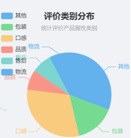
30.77%的评价与口感和其他因素有关，而其他因素中的评价大多是关于橙皮的泡茶和香味的描述，可见对于本产品，消费者对口感这一产品元素的感知明显，其次15.39%的评价与包装有关，7.69%的评价与品质、售后和物流有关。评价类别出现频次越高则表明消费者对其越为关注，可对高频次评价类别如口感进行深入分析。
三．江西永新橙皮2021年第三季度消费者对产品属性具体评价分析
1.口感：消费者对于永新橙皮的口感最为关注，但是从评价来看永新橙皮的口感并没有满足消费者的期待。
对于永新橙皮口感方面的评价，有50%的消费者给出了负面的评价，认为永新橙皮的口感很一般或不好，只有25%的消费者认为口感较好，可以看出，消费者对作为蜜饯零食的永新橙皮在口感方面的关注度较高，但是却没有满足消费者的期待。
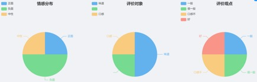
2.其他：除了橙皮本身的特点外，香味和泡茶类别等也是消费者较为关注的方面
永新橙皮作为一种蜜饯零食，除了在口感和品质上满足了消费者的需求外，还能够泡水饮用，符合了消费者的期望，从而获得了全部消费者的正面评价。
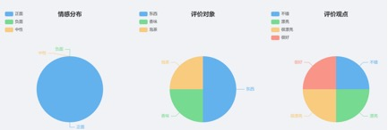
3.包装：包装好，是获得消费者青睐的主要要素
产品的外包装能够营造品牌形象、彰显品牌价值，也体现着产品质量。消费者对江西永新橙皮的包装表现出正向的情感评价，包装好、外观好是消费者在描述永新橙皮包装时的主要用词，可见永新橙皮的包装能够得到消费者的认可。
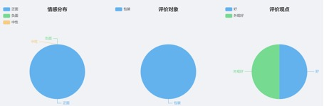
4.品质：品质有保证是消费者选择江西永新橙皮的原因之一
消费者消费理念的转变和饮食结构的改善，使得绿色、优质、安全的消费新需求不断扩大，品质成为消费者选择的重要因素。在第三季度的消费者评价中，江西永新橙皮凭借其有保证的品质获得了消费者的正面评价。
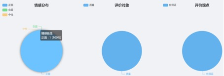
5.售后：售后得到正面评价
本季度消费者对江西永新橙皮的售后相关评价为正面，对商家服务态度满意。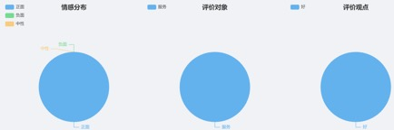
6.物流：速度是消费者对物流评价的重要指标
从消费者对于江西永新橙皮物流运输评价的结果来看，消费者对本产品的物流评价较高，其中速度是消费者对其给出正面评价的关键要素，消费者认为物流速度快，因此商家应该将这种优势保持下去。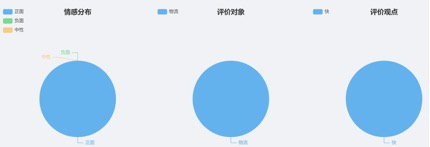
四、江西永新橙皮发展建议
1. 政府建议
综合分析江西永新橙皮第三季度用户评价，可得出以下结论，①消费者对江西永新橙皮整体满意度较高；②橙皮消费热度在不同时期并无明显差异，且一直保持在一个较低的水平；③橙皮口感是消费者评价的侧重点；④口感一般，包装好是消费者对江西永新橙皮的普遍评价。基于此为江西永新橙皮在营销层面提出以下几点建议
一、1.1积极采用社交媒体营销，提高永新橙皮知名度
（1） 政府开设起江西永新特产，或者农产品主题的官方自媒体。在微信公众号、微博、小红书、抖音、快手、下厨房等热门社交平台或美食相关平台开设账号，账号中可以分享永新橙皮的采摘、制作全过程等具有当地特色的内容，晒制橙皮时，也可把橙皮用小刀雕刻成鲤鱼、蝴蝶、花朵等图案，增加制作过程的趣味性和艺术性，吸引消费者。可以积极借势乡村振兴、扶农助农、生态健康等话题，丰富账号内容，树立正面形象。可以引进自媒体运营方面的专业人才进行内容输出与管理，在社交媒体平台扩大江西永新橙皮的影响力，大力宣传永新橙皮消食解酒、润肺生津、通气化痰等功效。也增加与消费者沟通的渠道。
（2）
引导帮助江西永新橙皮的商家与社交领域达人合作，通过他们的影响力向消费者“种草“。达人选择可以是与食物紧密相关的，也可以是不相关但影响力大的。包括美食测评博主、美食制作博主、美食探店博主、本地有影响力的自媒体、农业博主、自然生活健康生活博主等，可以邀请达人到永新当地亲身体验从青橙的采摘到橙皮的制成，在这个过程中传播永新橙皮的制作理念及其功效，也根据不同达人的特色进行广告植入或其他形式的商业合作，这些博主对永新橙皮品质、口感的正面评价，能够积极提升树立品牌形象，让更多的消费者认识江西永新橙皮，产生购买的兴趣。在第三季度可以着重刻画产品的功效好、口感独特、品质高等产品定位。
（3） 增加精准营销的力度，除了增加在社交媒体、电商平台的广告投放外，更应该分析好自己的目标群体，对其网络平台偏好深入分析，减少不必要的广告投入。比如对橙皮较为关注的消费者一般都比较注重养生，他们同时也可能会关注大枣、枸杞等其他养生食品，有中老年人，也有新一代年轻人，不断地形成消费者画像，针对性的进行产品推广。如在下厨房APP、小红书APP以及豆瓣美食小组内精准宣传投放广告。
（4） 抓住在重要的营销节点进行大力度宣传推广及营销促销，橙皮的消费热度在不同时期差异并不明显，消费热度一直保持在较低的水平，与其口感、知名度等因素关联较大，永新橙皮多为自用，可以在618前做好产品的预热和造势，加大优惠力度或者推出礼品款等吸引消费者。
1.2借势互联网+农产品销售新模式，积极推进电商助农
（1） 利用好传统电商与直播电商，传统电商指的是天猫、淘宝、京东、拼多多等传统主流电商平台，直播电商则是通过直播在平台上售产品
。政府可以根据江西永新橙皮不同品牌的情况指导他们在各个平台开设店铺或开设直播间，政府也可建立官方直播间、官方助农店铺。引进农产品电商运营、电商供应链人才来帮助指导各个品牌的运营。由第三季度数据可见消费者会关注电商购物的物流服务，基于此政府应该帮助各大品牌解决物流难题，推动橙皮上下游产业链合作，协助当地商家提供品质稳定、物流高效的产品，塑造产品口碑。
（2）
可以牵头当地橙皮品牌与知名电商平台和带货主播洽谈合作。如抖音上的“东方甄选”直播购物平台，依托有深度有有情怀的平台，赋予江西永新橙皮更多的文化符号，同时也借助消费者对这类直播平台与主播的喜爱，增加消费热度。
1.3深耕品牌建设，增强品牌宣传
（1） 借助大众性、权威性媒体建立品牌影响力。可以与央视纪录片《远方的家》、《航拍中国》、《风味人间》等美食节目进行合作，借助有权威性的公共媒体，提升品牌知名度传播品牌特色。也可以在知名媒体或者杂志上打广告，做宣传，利用媒体平台或者知名人物背书，扩大品牌影响力。
（2） 组织拍摄江西永新橙皮主题纪录片，突出自然、淳朴、生态健康等特色，注重成片的视觉与感觉，深度挖掘品牌故事，给永新橙皮更多的品牌韵味，讲好品牌的故事。
（3） 重视品牌形象，强化包装、宣传等视觉设计。由第三季度数据结论产品的包装是消费者评价的侧重点，政府在这方面可以加强对市场上永新橙皮产品的包装调研分析，并与其他地区橙皮爆款等对比，寻找出消费者最满意的橙皮包装类型，基于此对当地品牌的包装设计给予指导，增强视觉影响力。
（4） 组织举办橙皮产品展销会。通过具有一定规模的产品推介会和展销会，汇聚全国各地各具特色的橙皮比拼交流，组织企业之间进行橙皮品质和口感比拼、橙皮制作等方面的交流论坛活动，不断树立江西永新橙皮的独特品牌定位与橙皮特色，并积极与各大媒体联合，增强活动的影响力，扩大江西永新橙皮的知名度。
1.4文旅商农一体化，建设特色产业链生态
（1） 重视线下体验，打造双重口碑。积极借鉴体验式营销成功案例，为消费者提供良好的线下体验。借力江西永新当地的旅游资源和基础设施，进一步开展橙皮制作学习体验活动、利用橙皮雕刻图案等进一步拉近与消费者的距离，让消费者切实体验到江西永新橙皮的优良品质与特色，将橙皮打造成当地旅游业的特色产品。
（2） 充分利用永新的自然资源、商旅文化资源，打造文旅商农一体化。除针对永新橙皮这一产品外，也应积极打造良好的特色产业链，包括酱姜、蜜茄、酱萝卜等永新特产，使得永新的品牌更具知名度，提升产品附加值和软实力。
2.平台商家建议
由2021年第三季度与其他季度消费热度和消费评价的对比可见，永新橙皮的消费热度一直处于一个较低的水平，从评价中可知消费者对橙皮的口感不是很满意且橙皮的产品知名度不高。可见商家需要加大投入提高产品在平台的曝光度，首先，商家应对产品的描述进行优化，使得消费者在搜索相关产品时便能搜索到永新橙皮，其次商家要积极参与平台的各种活动，加大商品的宣传推广以及店铺内设置相应的营销促销活动，如足量打折、满减优惠，或者与其他相关联产品捆绑销售；其次，需要突出宣传永新橙皮消食解酒、润肺生津、通气化痰等功效；由用户评价对物流的重视可见，在与物流公司合作时应优先关注其物流服务质量和时效性。
3.生产厂家建议
由用户评价概览可见口感、包装、品质是消费者关注和评价的侧重点，其中口感是评价最多的关键词，且消费者对永新橙皮的口感评价并不高，这可能是橙皮消费热度一直保持在一个较低水平的主要原因，作为蜜饯零食类的特产，消费者还比较注重产品的包装是否完好，品质是否可靠，从而确定能否放心食用。基于此对于生产厂家有三点建议，其一：建议厂家对消费者口味偏好进行调查分析，改进永新橙皮的口感；其二：可研发更高端高品质系列产品使得其更具备礼品社交属性；其三：注重商品的品质，不断扩大品牌知名度。
4. 消费建议
消费者在购买本产品时，应重点关注其产品外观（边色翠绿，脯如白玉）、生产日期，关注平台已购消费者对于口感、包装、品质等的评价，进行综合判断。其次，消费者可以尽量选择在第三季度进行购买，第三季度能够买到新鲜制作的橙皮，同时，关注橙皮的消费热度，关注产品促销活动，增强产品的购买性价比。